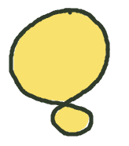
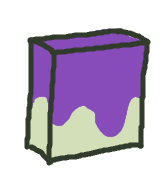
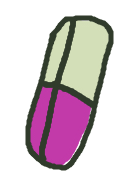

A simple drawing app by Aubrey McCarthy
There are shortcuts for various features! For example, control+z to 'undo'. Or a two finger tap on a touch screen.
Pressing E on the keyboard will toggle the eraser, F toggles poly 'fill area'. Or hold Alt while drawing
Hold Shift while clicking to draw a straight line between points
Click 'set background' to set background colour
Check out 'Ontop' and 'Under' blend modes, they really come in handy
Use the 'fill area' to quickly fill in areas with colour. 'fill area' can be used with the  'eraser' too!